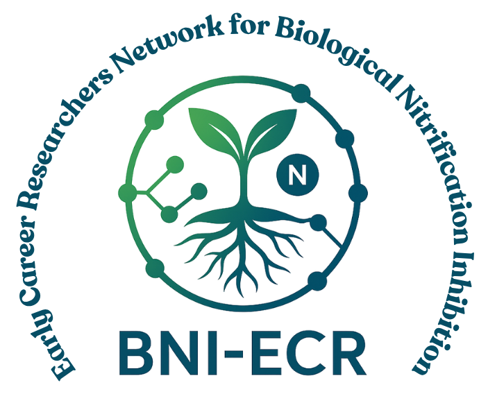

BNI-ECR Network
Connecting the next generation of BNI researchers
Supporting collaboration, knowledge exchange and professional development among early-career researchers working on Biological Nitrification Inhibition.

An international community for early-career BNI researchers
The BNI-ECR Network brings together PhD candidates, postdoctoral researchers and others early in their careers whose work is connected to Biological Nitrification Inhibition (BNI) and closely related subjects.
Founded by Gabriel S. Rocha and co-coordinated with Sam Stapley, the network held its kick-off meeting on 12 November 2025. It is a space to share work and methods, solve problems together, write together and get to know the wider BNI community.
Membership is free and open to eligible researchers internationally. Eligible researchers are PhD candidates, postdoctoral researchers, and researchers within about five years of completing their PhD, whose work is directly connected to BNI or its application.
Featured event
Meet us in Tsukuba
Research themes
What our members work on
BNI sits where plant biology, soil microbiology, agronomy and climate science meet. Our members come from across these fields.
Plant–soil–microbe interactions
Root exudates and BNI compounds, ammonia-oxidizing bacteria and archaea, and soil microbial ecology.
Crops and screening
Wheat, maize, sorghum, rice, barley and pasture grasses; crop and forage screening; plant breeding and genetics.
Nitrogen and emissions
Nitrogen-use efficiency, soil biogeochemistry, nitrate leaching and greenhouse-gas emissions.
Methods and metabolomics
Analytical approaches, assays and protocols for detecting and measuring BNI.
Field validation
Testing BNI traits in field and farming-system settings.
Modelling and application
Modelling, ex-ante assessment and translating BNI traits into agricultural systems.
Latest
News and activities
Work on BNI? Come and join us.
Tell us about your research and what you would like from the network. It takes a few minutes.